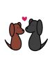
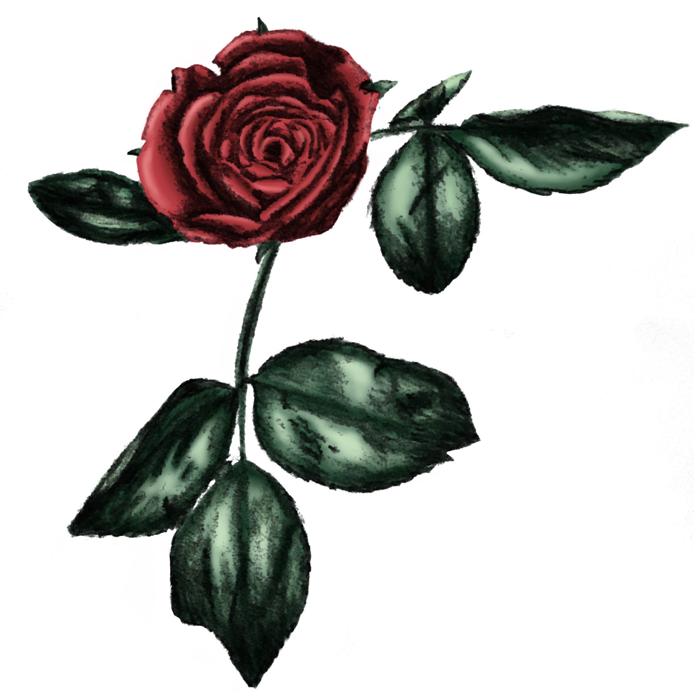
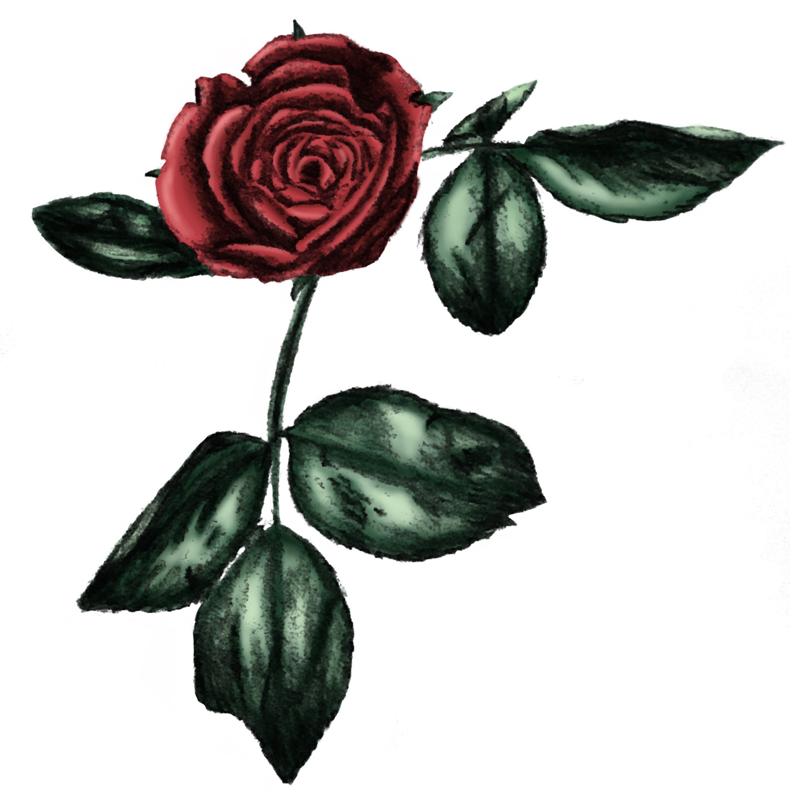

About Valentine's Day
Valentine's Day, celebrated every February 14th, is a day that couples around the world honor their partners, spouses, and sweethearts. There are hundreds of years of traditions and customs that many people still observe today.
The tradition of a box of chocolates or candy was started in the 19th century by Richard Cadbury, a scion of a British chocolate-manufacturing family. With the new technique recently established to create more varietes, Cadbury pounced on the opportunity to seel the chocolates as part of the beloved Valentine's Day.
The chubby baby with wings and a bow and arrow that we call Cupid has been associated with Valentine’s Day for centuries. However, before he was renamed Cupid, he was known to the ancient Greeks as Eros, the god of love. Eros, the son of Greek goddess Aphrodite, would use two sets of arrows—one for love and another for hate—to play with the emotions of his targets. It wasn’t until stories of his mischief were told by Romans that he adopted the childlike appearance that we recognize today.
The idea of using a kiss to sign off on valentines also has a long history, according to the Washington Post. The use of “X” came to represent Christianity, or the cross, in the Middle Ages. During the same time, the symbol was used to sign off on documents. After marking with an X, the writer would often kiss the mark as a sign of their oath. As the gesture grew among kings and commoners to certify books, letters and paperwork, these records were described as having been “sealed with a kiss.”
Valentine's Day Facts - History.com
Printable Cards:



 
